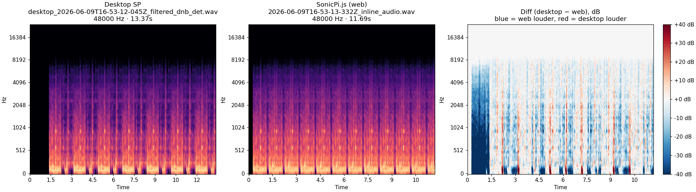
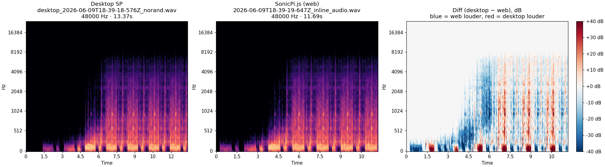

Ad-hoc desktop ↔ web investigations with full evidence — code, event diffs, A/B audio, spectrogram diffs. Captured against running desktop Sonic Pi. Latest: #513 — use_sample_bpm tempo (2026-06-09).
use_sample_bpm derives tempo from the real sample buffer
Bug: ProgramBuilder.sample_duration() was a stub return 1, so
use_sample_bpm :loop_amen = use_bpm(60/1) = the default 60 — a no-op. Every
sample-tempo piece played too fast. Fix (PR #514): pre-decode the referenced sample in
evaluate(), derive BPM from the real buffer length (num_beats·60/raw_seconds,
mirroring desktop sound.rb:542/2236). The bug hid behind the piece's rrand
(SV49 PRNG masked it in audio/MFCC) — only the event-onset layer exposed it, so these
experiments lead with the /s_new event diff.
cutoff: 80)
rrand removed and the filter pinned to a constant so the only variable is tempo.
This was run on the fix branch (before #512 control fix merged), so a constant cutoff sidesteps the
filter-sweep path entirely.
# deterministic filtered_dnb (rrand removed) — tempo isolation
use_sample_bpm :loop_amen
with_fx :rlpf, cutoff: 80 do |c|
live_loop :dnb do
sample :bass_dnb_f, amp: 5
sample :loop_amen, amp: 5
sleep 1
control c, cutoff: 80
end
end
/s_new onset times (desktop ↔ web)| player /s_new | per-beat step | onset seq | |
|---|---|---|---|
| desktop SP | 16 | 1.753 s (BPM 34.2) | 0, 0, 1.753, 1.753, 3.507, … |
| web — before | 26 (1.63×) | 1.000 s (BPM 60, no-op) | DIVERGE @#2, max Δ 5273 ms |
| web — after | 16 (1.00×) | 1.753 s (BPM 34.2) | MATCH, max Δ 1 ms |

num_beats: 4 (distinct code path)use_sample_bpm :loop_amen, num_beats: 4 live_loop :x do sample :loop_amen, amp: 3 sleep 4 end
| player /s_new | per-beat step | onset seq | |
|---|---|---|---|
| desktop SP | 8 | 1.753 s | match |
| web | 8 | 1.753 s | MATCH, max Δ 0 ms, notes ✓ |
At num_beats: 4, BPM = 4·60/1.753 = 136.9 → sleep 4 = 1.753 s = one full loop. Matches desktop exactly.
rrand removed)
Run on merged main (with #512 control fix). The real rlpf cutoff: 10, cutoff_slide: 4
sweep driven by control is kept; only rrand → fixed values.
41) — but the live engine
sounded correct. Root cause: tools/capture.ts --wrap-recording wraps the code with trailing
with_bpm 60 do sleep N end, which deferred use_sample_bpm into the synthetic
__run_once wrapper → it emitted as __b.use_sample_bpm (builder-local bpm) → the
:dnb loop read the unchanged defaultBpm 60 → the #513 no-op reappeared in the
recording only. Fix: add use_sample_bpm to TOP_LEVEL_SETTINGS (emitted eagerly
at top level, like use_bpm; SV55/#420 class). The numbers below are the post-fix capture —
filter now opens ~5 s (BPM 34.2), matching desktop and the live engine.
# faithful filtered_dnb, rrand removed (deterministic) — control sweep kept
use_sample_bpm :loop_amen
with_fx :rlpf, cutoff: 10, cutoff_slide: 4 do |c|
live_loop :dnb do
sample :bass_dnb_f, amp: 5
sample :loop_amen, amp: 5
sleep 1
control c, cutoff: 80, cutoff_slide: 2
end
end
| player /s_new | per-beat step | onset seq | |
|---|---|---|---|
| desktop SP | 16 | 1.753 s | 0, 0, 1.753, 1.753, 3.507, … |
| web | 14 (window edge) | 1.753 s | MATCH, max Δ 0 ms |
| audible onsets | onset pitch track | inter-onset | peak / RMS | |
|---|---|---|---|---|
| desktop SP | 23 | 47,44,60,46,44,60,48,74… | 0.130 s | 1.00 / 0.156 |
| web (post-fix) | 22 | 47,41,44,60,46,60,48,74… | 0.130 s | 0.56 / 0.080 |
| web (before #515) | 10 | 41,41,41,41… (BPM-60 no-op) | 1.000 s | 0.60 / 0.107 |

/s_new
dispatch is bit-identical to desktop (1.753 s/beat, EVENT-MATCH) on all fixtures. The faithful piece's
audio now also matches desktop: Tier-1 pitch-class cos 0.992, tempo ✓, density 0.96 — the
remaining difference is the known ~0.5× web gain (#504/#268) and the SV49 PRNG random-walk
(both declared v1 non-goals). The apparent "audio divergence" was NOT an engine gap — it was a
capture-pipeline bug (#515): --wrap-recording's trailing bare code deferred
use_sample_bpm into __run_once, re-introducing the #513 no-op in the recording only.
The live engine was correct all along (confirmed by the unwrapped Rec-button capture + the user's live A/B).
Lesson: the capture wrap is part of the measurement apparatus — when a recording disagrees with the
live engine, suspect the apparatus, not just the engine (the --wrap-recording transform must
preserve top-level execution semantics; SV30 corollary).
{kind=link}
{kind=link}